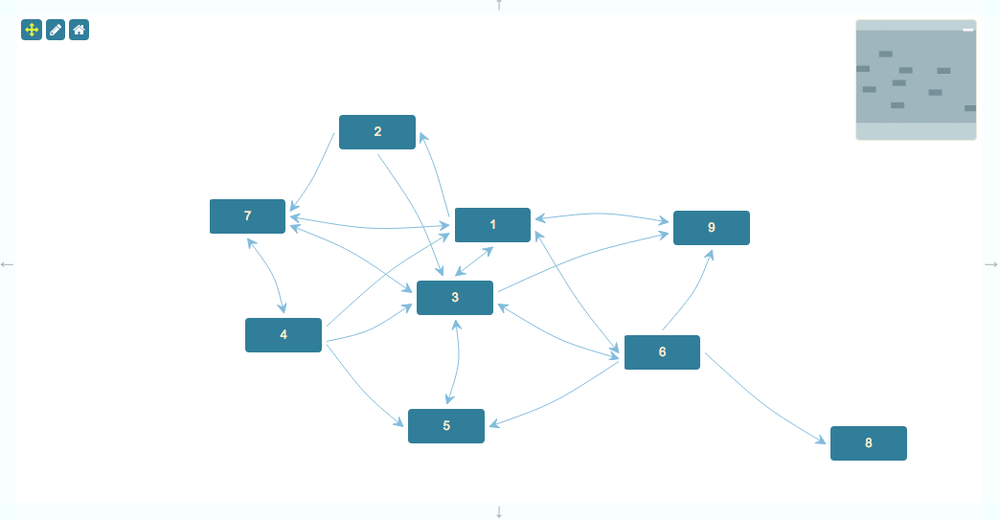

This is an example of the Toolkit's ability to trace an overlay along the shortest path from one Node to another.

This page gives you an in-depth look at how the application is put together.
{
"dependencies": {
"font-awesome": "^4.7.0",
"jsplumbtoolkit": "file:../../jsplumbtoolkit.tgz"
}
}
<link href="//maxcdn.bootstrapcdn.com/bootstrap/3.2.0/css/bootstrap.min.css" rel="stylesheet">
<link href="node_modules/font-awesome/css/font-awesome.min.css" rel="stylesheet">
<link rel="stylesheet" href="node_modules/jsplumbtoolkit/dist/css/jsplumbtoolkit-defaults.css">
<link rel="stylesheet" href="node_modules/jsplumbtoolkit/dist/css/jsplumbtoolkit-demo.css">
<link rel="stylesheet" href="app.css">
Font Awesome, Bootstrap, jsplumbtoolkit-demo.css, and app.css are used for this demo and are not jsPlumb Toolkit requirements. jsplumbtoolkit-defaults.css is recommended for
all apps using the Toolkit, at least when you first start to build your app. This stylesheet contains sane defaults for the various widgets in the Toolkit.
<script src="node_modules/jsplumbtoolkit/dist/js/jsplumbtoolkit.js"></script>
<script src="app.js"></script>
We import jsplumbtoolkit.js from node_modules (it was listed in package.json). app.js contains the demo code; it is discussed on this page.
var toolkit = jsPlumbToolkit.newInstance();
The app uses a single template, with the default ID:
<script type="jtk" id="jtk-template-default">
<div>
<div class="name">
<span>${name}</span>
</div>
</div>
</script>
Data for this application is randomly generated from a demo support class:
var data = jsPlumbToolkitDemoSupport.randomGraph(5, 10);
toolkit.load({
data: data
});
In the View, we configure the appearance of Edges and Nodes, and we also handle node clicks to instigate path traversals. See below for a discussion of how path traversals are handler.
var view = {
edges: {
"default": {
paintStyle: { lineWidth: 1, strokeStyle: '#89bcde' },
overlays: [
["Arrow", { fillStyle: "#89bcde", width: 10, length: 10, location:1 } ]
]
},
"bidirectional":{
overlays: [
["Arrow", { fillStyle: "#89bcde", width: 10, length: 10, location:0, direction:-1 } ]
]
}
},
nodes:{
"default":{
events: {
tap:function(params) {
// on node click...
if (source == null) {
//... either set the current path source. here we also add a class
// so you can see its selected.
source = params;
jsPlumb.addClass(source.el, "jtk-animate-source");
}
else {
// ...or trace a path from the current source to the clicked node.
var traced = renderer.tracePath({
source:source.node,
target:params.node,
overlay:["Diamond", {
width:15,
length:15,
fillStyle: "#89bcde"
}],
options: {
speed: 250
}
});
// cleanup the source for the next one.
jsPlumb.removeClass(source.el, "jtk-animate-source");
source = null;
if (!traced) {
alert("No path found!");
}
}
}
}
}
}
};
var renderer = toolkit.load({type: "json", data: data}).render({
container: canvasElement,
view:view,
layout: {
type: "Spring",
padding:[ 30, 30 ]
},
miniview: {
container: miniviewElement
},
lassoFilter: ".controls, .controls *, .miniview, .miniview *",
events: {
canvasClick: function (e) {
toolkit.clearSelection();
},
modeChanged: function (mode) {
jsPlumb.removeClass(jsPlumb.getSelector("[mode]"), "selected-mode");
jsPlumb.addClass(jsPlumb.getSelector("[mode='" + mode + "']"), "selected-mode");
}
},
jsPlumb: {
Anchor:"Continuous",
Connector: [ "StateMachine", { cssClass: "connectorClass", hoverClass: "connectorHoverClass" } ],
Endpoint: "Blank"
}
});
The meaning of each parameter is as follows:
Path tracing is handled in two stages:
The tap event is captured and handled inside the view:
tap:function(params) {
// on node click...
if (source == null) {
//... either set the current path source. here we also add a class
// so you can see its selected.
source = params;
jsPlumb.addClass(source.el, "jtk-animate-source");
}
else {
// ...or trace a path from the current source to the clicked node.
var traced = renderer.tracePath({
source:source.node,
target:params.node,
overlay:["Diamond", {
width:15,
length:15,
fillStyle: "#89bcde"
}],
options: {
speed: 250
}
});
// cleanup the source for the next one.
jsPlumb.removeClass(source.el, "jtk-animate-source");
source = null;
if (!traced) {
alert("No path found!");
}
}
}
The key piece of code here is the call to tracePath on the renderer:
var traced = renderer.tracePath({
source:source.node,
target:params.node,
overlay:["Diamond", {
width:15,
length:15
}],
options: {
speed: 250
}
});
The meaning of each parameter is: